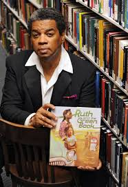
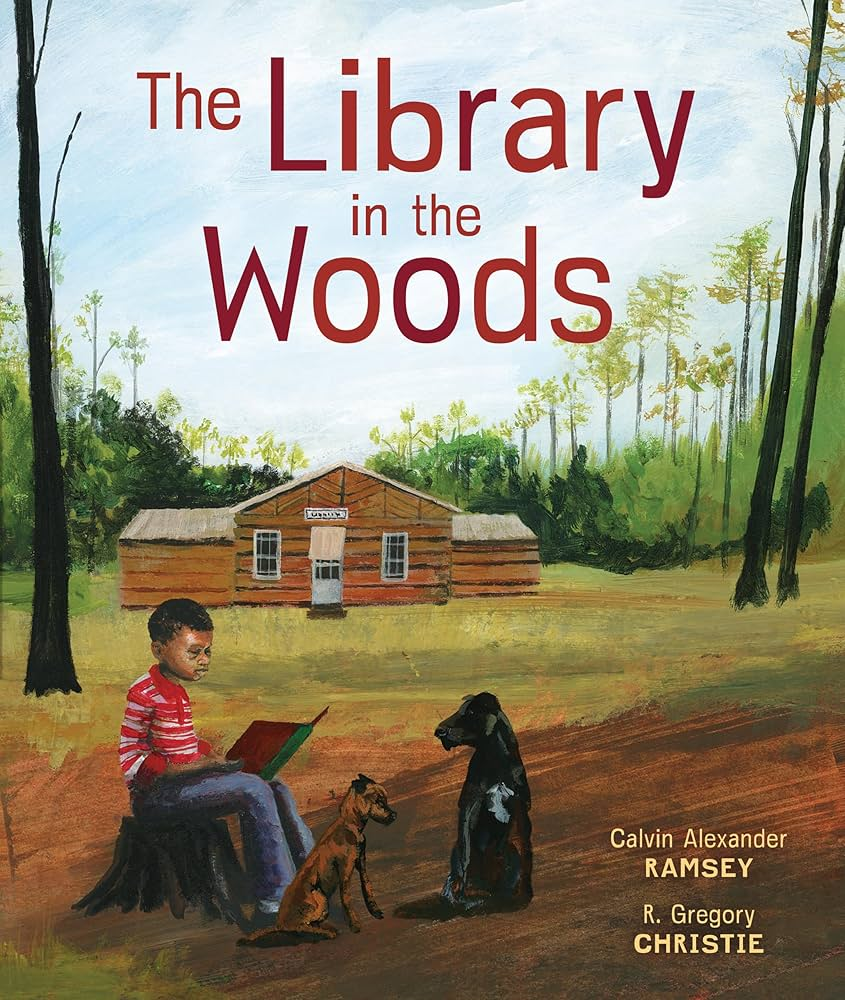
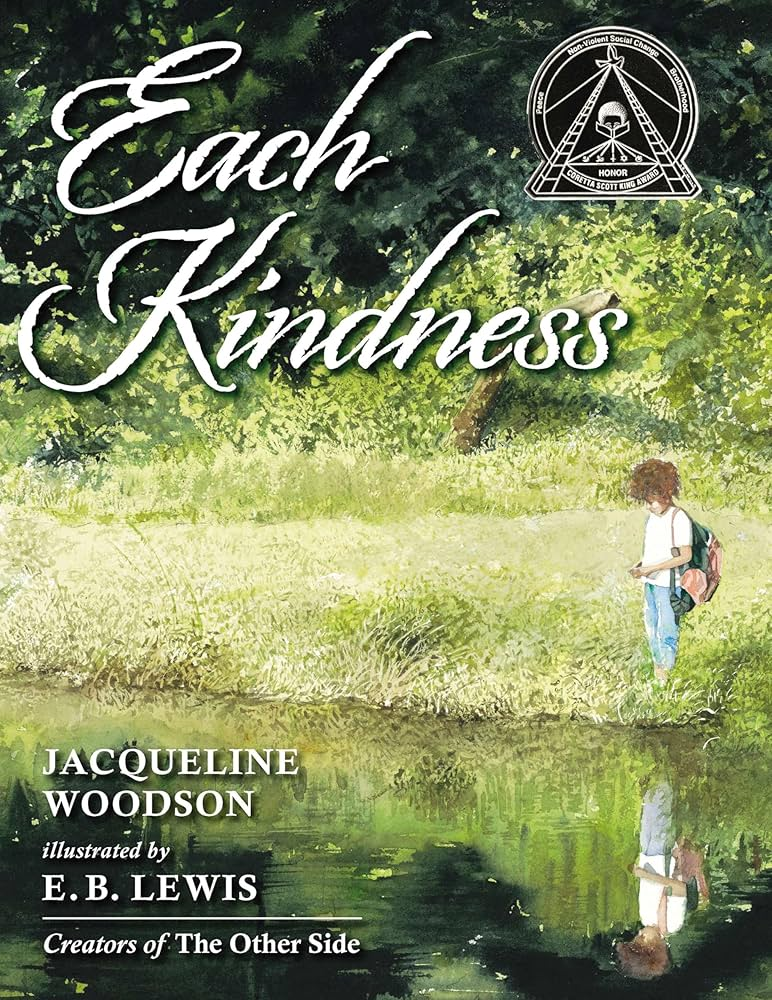
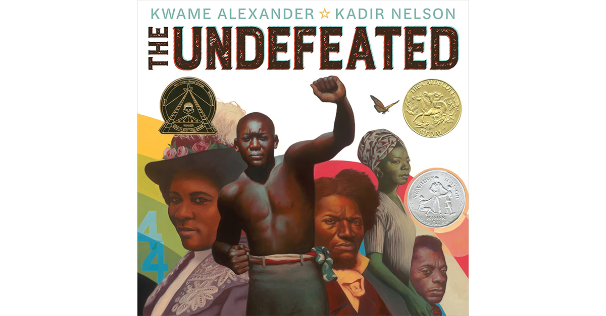

He believes words can help people feel proud of who they are.
Book:Crown: An Ode to the Fresh Cut
3rd Grade Friendly Summary: This book celebrates the special feeling of getting a fresh haircut. It shows how a haircut can help someone feel confident and proud.
Why He Won the Award:
Derrick Barnes won the Coretta Scott King Award because Crown celebrates Black identity, confidence, and joy. It is perfect for Black History Month because it shows pride and self-love.


Calvin Alexander Ramsey
Born: 1948, Columbus, Ohio
He is also a librarian.
He enjoys sharing African American history through stories.
Book:Library in the Woods
3rd Grade Friendly Summary: This true story shows how a man brought books to children who lived far away from libraries by riding a horse through the mountains.
Why He Won the Award:
He won the Coretta Scott King Award because the book highlights determination, education, and service in African American history. It is an excellent Black History Month book because it shows how learning can change lives.

Jacqueline Woodson
Born: 1963, Columbus, Ohio
She writes books about feelings and fairness.
Her stories help readers think deeply.
Book:Each Kindness
3rd Grade Friendly Summary: This book teaches that small acts of kindness matter. It reminds readers to be kind before it is too late.
Why She Won the Award:
She won the award because the book encourages empathy and responsibility. It is meaningful for Black History Month because it helps students think about how their actions affect others.

Kwame Alexander
Born: 1968, New York City, New York
He writes poems and novels.
He loves basketball and music.
Book:The Undefeated
3rd Grade Friendly Summary: This powerful poem honors Black Americans who faced challenges and never gave up. It celebrates strength and courage.
Why He Won the Award:
Kwame Alexander won the Coretta Scott King Award because the book honors Black history and perseverance. It is perfect for Black History Month because it celebrates resilience and achievement.